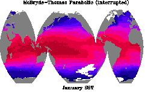
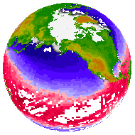

FAQ
Map Projections: Curvilinear coordinates version
Map Projections: Curvilinear coordinates version
Question:
How do I create map projections with Ferret?
Examples:
| McBryde-Thomas flat polar parabolic | orthographic |
|---|---|
|  |  |
Explanation:
Map projection scripts released with Ferret take advantage of the 3 argumentSHADE and FILL commands which were introduced with the Version 4.9 release of Ferret. The scripts are described in the V4.9 release notes.
Solution:
To see a demonstration of the map projection capabilities you can run the map projection demo script:
yes? go mp_demo
To list the map projection scripts including the utility scripts, from the Unix command line:
% Fgo mp line_samples.jnl: draw examples of the line styles used by the PLOT command mp_annotate.jnl: write text on a predefined map projection. mp_aspect.jnl: Calculate the appropriate aspect ratio mp_aspect.jnl.bak: Calculate the appropriate aspect ration mp_bonne.jnl: Sets up variables for a Bonne map of the world mp_craster_parabolic.jnl: Sets up variables for a Craster Parabolic map of the world mp_demo.jnl: demo of map projection scripts, including mp_eckert_greifendorff.jnl: Sets up variables for a Eckert-Greifendorff map of the world mp_eckert_iii.jnl: Sets up variables for a Eckert III map of the world mp_eckert_v.jnl: Sets up variables for a Eckert V map of the world mp_fland.jnl: Plot or overlay an area-filled map of the continents mp_graticule.jnl: Overlay a graticule on a map. mp_graticule_limit.jnl: Overlay a graticule on a map, limited by a range of x and mp_graticule_limit.jnl.bak: Overlay a graticule on a map, limited by a range of x and mp_grid.jnl: Associates a data grid with a predefined map projection. mp_hammer.jnl: Sets up variables for a Hammer map of the world mp_label.jnl: Place a label on a map projection using user coordinates mp_lambert_cyl.jnl: Sets up variables for a Lambert Cylindrical Equal Area map of the world mp_land.jnl: Plot outlines of continents, countries, and/or states mp_land_detail.jnl: Plot outlines of continents, countries, and/or states mp_land_stripmap.jnl: This journal file is not "nice" and is provided as an example only. mp_line.jnl: Plots data using a predefined map projection. mp_mask_outline.jnl: For a plot using map projections, define a contour field with mp_mcbryde_fpp.jnl: Sets up variables for a McBryde-Thomas Flat-Polar Parabolic map of the world mp_mercator.jnl: Sets up variables for a Mercator projection mp_ocean_stripmap.jnl: This journal file is not "nice" and is provided as an example only. mp_orthographic.jnl: Sets up variables for a Orthographic map of the world mp_plate_caree.jnl: Sets up variables for a Plate Caree map of the world mp_poly_vectors.jnl: mp_polyconic.jnl: Sets up variables for a Polyconic map of the world mp_polymark.jnl: Plot polygons using a predefined map projection. mp_polytube.jnl: Plot a colored tube using a predefined map projection. mp_polytube_bent.jnl: Plot a colored tube using a predefined map projection. mp_rotate.jnl: Sets up variables for a Rotated map of the world mp_sinusoidal.jnl: Sets up variables for a Sinusoidal map of the world mp_stereographic_eq.jnl: Sets up variables for a Stereographic Equatorial map of the world mp_stereographic_north.jnl: Sets up variables for a Stereographic North map of the world mp_stereographic_south.jnl: Sets up variables for a Stereographic South map of the world mp_tics.jnl: mp_trackplot.jnl: Plot a trackplot using a predefined map projection. mp_vertical_perspective.jnl: Sets up variables for a Vertical Perspective map of the world mp_viewport_aspect.jnl: Define a viewport for plotting map projections mp_wagner_vii.jnl: Sets up variables for a Wagner VII map of the world mp_winkel_i.jnl: Sets up variables for a Winkel I map of the world test_mp_land.jnl: test_mp_land_detail.jnl: